2017年，是全面从严治党和惩治腐败的关键一年，反腐力度不减、重拳频出：孙政才等30余名中管干部被查处，高官获刑人数刷新往年记录，“百名红通人员”归案数量过半等。此外，监察体制改革等一系列重大部署和制度安排进一步落实，《中国共产党纪律检查机关监督执纪工作规则（试行）》公布，十八届中央巡视实现全覆盖并圆满收官，中央确定《关于在全国各地推开国家监察体制改革试点方案》……
人民网·中国共产党新闻网推出“反腐倡廉大事记”系列策划，盘点2017年以来我国党风廉政建设和反腐败斗争成果。大事记分为上、下篇，上篇为
“
十八届中央巡视全覆盖 ‘百名红通’归案过半
”
，下篇为
“
30余名中管干部落马 3名部级纪检干部被查
”
。
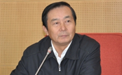
姓名：夏兴华
原职：中国民用航空局原党组成员、副局长
问题：违反中央八项规定精神、组织纪律、廉洁纪律
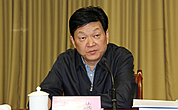
姓名：虞海燕
原职：甘肃省委常委、副省长
问题：严重违反政治纪律和政治规矩、组织纪律，违反中央八项规定精神，违反廉洁纪律、工作纪律
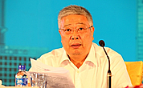
姓名：李立国
原职：民政部原党组书记、部长
问题：管党治党不力，严重失职失责
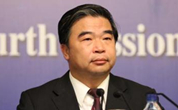
姓名：窦玉沛
原职：民政部原党组成员、副部长
问题：管党治党不力，严重失职失责
姓名：王银成
原职：中国人民保险集团股份有限公司党委副书记、副董事长、总裁
问题：严重违反政治纪律和政治规矩、违反中央八项规定精神，违反组织纪律、廉洁纪律、工作纪律
姓名：杨东平
原职：交通银行党委委员、首席风险官
问题：违反政治纪律、违反廉洁纪律
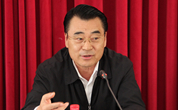
姓名：李文科
原职：辽宁省人大常委会副主任
问题：严重违反政治纪律和政治规矩、组织纪律，违反廉洁纪律，生活纪律
姓名：陈旭
原职：上海市人民检察院原检察长
问题：严重违反政治纪律和政治规矩，违反中央八项规定精神，违反组织纪律、廉洁纪律、生活纪律
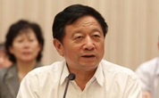
姓名：孙怀山
原职：十二届全国政协常委、港澳台侨委员会主任
问题：严重违反政治纪律和政治规矩，违反中央八项规定精神，违反廉洁纪律
姓名：项俊波
原职：中国保险监督管理委员会党委书记、主席
问题：严重违反政治纪律和政治规矩、工作纪律，违反中央八项规定精神，违反组织纪律、廉洁纪律和生活纪律
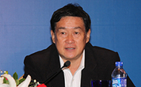
姓名：杨崇勇
原职：河北省人大常委会党组书记、副主任
问题：严重违反政治纪律和政治规矩、组织纪律，违反廉洁纪律
姓名：张化为
原职：中央巡视组原副部级巡视专员
问题：严重违反政治纪律和政治规矩、组织纪律，违反中央八项规定精神和廉洁纪律
姓名：陈传书
原职：民政部原党组成员、中国老龄协会原会长
问题：工作严重失职失责，监督管理不力
姓名：周春雨
原职：安徽省政府原党组成员、副省长
问题：违反政治纪律、组织纪律、生活纪律
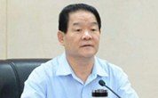
姓名：魏民洲
原职：陕西省人大常委会党组副书记、副主任
问题：严重违反政治纪律和政治规矩，违反中央八项规定精神，违反组织、廉洁纪律、生活纪律
姓名：杨家才
原职：中国银监会党委委员、主席助理
问题：严重违反政治纪律和政治规矩，违反中央八项规定精神，违反组织纪律、廉洁纪律、生活纪律
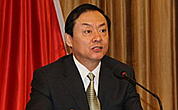
姓名：刘新齐
原职：新疆生产建设兵团原党委副书记、司令员
问题：违反政治纪律、组织纪律、廉洁纪律、工作纪律
姓名：曲淑辉
原职：中央纪委驻国家民族事务委员会纪检组原组长、国家民族事务委员会原党组成员
问题：严重失职失责，长期干预和插手驻在部门下属单位相关工程项目，并从中谋取私利
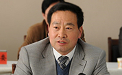
姓名：刘善桥
原职：湖北省政协党组成员、副主席
问题：违反政治纪律、组织纪律、廉洁纪律、生活纪律
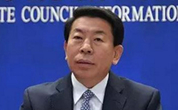
姓名：张喜武
原职：国务院国有资产监督管理委员会原党委副书记、副主任
问题：严重违反政治纪律和政治规矩，违反组织纪律、廉洁纪律、工作纪律
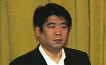
姓名：王宏江
原职：天津市委原常委、统战部部长
问题：严重违反组织纪律、工作纪律和廉洁纪律
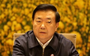
姓名：王三运
原职：十二届全国人大教科文卫委员会副主任委员
问题：严重违反政治纪律和政治规矩，违反中央八项规定精神，违反组织纪律、廉洁纪律
姓名：孙政才
原职：中央政治局委员
问题：严重违反党的政治纪律和政治规矩，严重违反中央八项规定和群众纪律，严重违反组织纪律、廉洁纪律、工作纪律、生活纪律
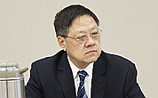
姓名：许前飞
原职：江苏省高级人民法院原党组书记、院长
问题：违反政治纪律、组织纪律、廉洁纪律，严重违反中央八项规定精神
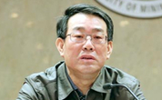
姓名：杨焕宁
原职：国家安全生产监督管理总局原党组书记、局长
问题：严重违反政治纪律和政治规矩，违反廉洁纪律，利用职权谋取私利
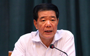
姓名：莫建成
原职：中央纪委驻财政部纪检组组长、财政部党组成员
问题：严重违反政治纪律和中央八项规定精神，违反组织纪律、廉洁纪律、工作纪律
姓名：夏崇源
原职：公安部原党委委员、政治部主任
问题：严重违反政治纪律和政治规矩，违反中央八项规定精神，违反组织纪律、廉洁纪律，利用职务影响谋取私利
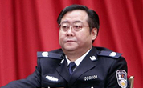
姓名：何挺
原职：重庆市原副市长，市公安局原党组书记、局长
问题：严重违反政治纪律和中央八项规定精神，违反组织、廉洁、工作纪律
姓名：沐华平
原职：重庆市政府原党组成员、副市长
问题：严重违反政治纪律和政治规矩，违反工作纪律，在重大项目决策中严重失职失责；违反组织纪律，不按规定报告个人有关事项
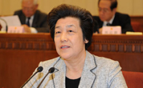
姓名：吴爱英
原职：司法部原部长、党组书记
问题：严重违纪
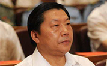
姓名：鲁炜
原职：中共中央宣传部原副部长
问题：涉嫌严重违纪，目前正接受组织调查。
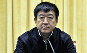
姓名：刘强
原职：辽宁省人民政府副省长、党组成员
问题：涉嫌严重违纪，目前正接受组织调查。
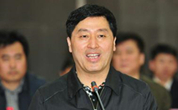
姓名：张杰辉
原职：河北省人大常委会副主任
问题：涉嫌严重违纪，目前正接受组织调查。